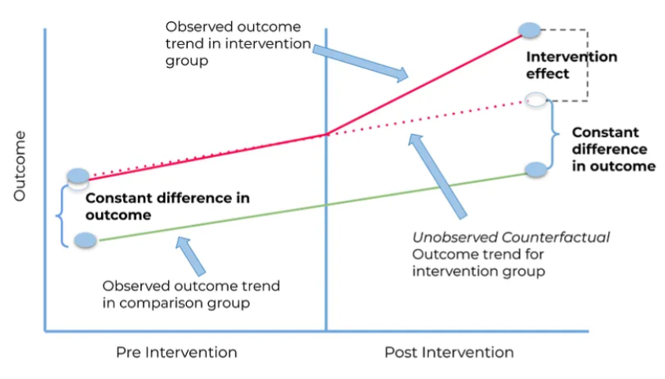

Difference in differences (DiD)#
The difference-in-differences (DiD) design predates the randomised experiment by roughly 85 years. It was first used in 1855 by John Snow in his analysis of the cause of cholera. However, it is used relatively infrequently nowadays. [Canglia and Murray 2020]
In its simplest form, the Did method compares the change over time in a continuous population-level outcome between:
An exposed group
An unexposed group
(Compares change over time in the exposed group, to change over time in the unexposed group, as just comparing the exposed group before and after has issues).
It ‘attempts to control for changing time trends, by using a comparison group to represent the counterfactual outcome trend in the exposed.’ ‘DiD also addresses time-invariant confounding but requires assuming that there would have been no difference in trend between the groups in the absence of the intervention (the “parallel trends” assumption).’ [Igelström et al. 2022]
Image from Figarri Keisha 25 March 2022 Medium blog post:

Example: John Snow and cholera#
In 1855, the cause of cholera was unknown. John Snow suspected it was waterborne. He compared:
Southwark and Vauxhall Company
Lambeth Water company
Both used water from River Thames. Neighbourhoods served by them both had very high mortality during the 1849 outbreak. In 1852, Lambeth Water Company moved its water intake to a site upstream of the sewage outflow.
Question: Did the rate of cholera death decrease when water intake moved upstream, compared to if it had remained downstream? He couldn’t just compare before and after for Lambeth due to the change in cholera cases over time - so instead, answered by comparing the change in deaths, to the changes in deaths for Southwark and Vauxhall Company
Answer by estimating the average causal effect in the treated, or average treatment effect in the treated, or ATT.
Snow observed from 1849 to 1854 that:
Southwark: increased by 118 deaths per 100,000
Lambeth: decreased by 653 deaths per 100,000
Assumptions#
Consistency - ‘the observed exposure of interest is equal to the counterfactual exposure of interest’
e.g. ‘Moving the water source from opposite Hungerford Market to Thames Ditton maps to a sufficiently well-defined intervention’
Exchangeability and parallel trends - ‘any unmeasured determinants of the outcome are either time-invariant or group-invariant’
e.g. ‘Any unmeasured determinants of the cholera death rate either do not vary with time or do not vary by district.’
Exchangeability and strict exogeneity - ‘implementation of the change in exposure was not related to the baseline value of the outcome variable’
e.g. ‘The decisions to move or not move the Lambeth Company and the Southwalk & Vauxhall Company water intake sources were independent of the cholera mortality rates in neighborhoods supplied by those companies.’
Positivity - ‘all individuals or subgroups of individuals are eligible to receive all levels of exposure’
e.g. ‘The decision to move or not move the water intake source was available to both the Lambeth and Southwalk & Vauxhall Companies.’